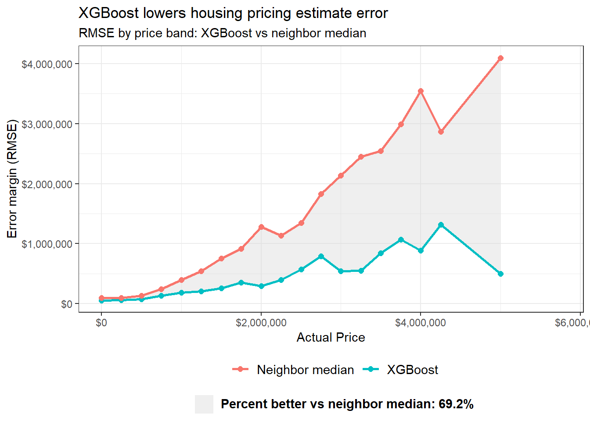

Code
error_by_bin <- read_csv("model_error_by_price_bin.csv")
error_wide <- error_by_bin %>%
select(bin_left, model, rmse) %>%
pivot_wider(names_from = model, values_from = rmse) %>%
mutate(
ymin = pmin(`XGBoost`, `Neighbor median`),
ymax = pmax(`XGBoost`, `Neighbor median`),
diff = `Neighbor median` - `XGBoost`
)
bin_width <- median(diff(error_wide$bin_left), na.rm = TRUE)
estimated_savings <- sum(pmax(error_wide$diff, 0) * bin_width, na.rm = TRUE)
baseline_area <- sum(pmax(error_wide$`Neighbor median`, 0) * bin_width, na.rm = TRUE)
estimated_savings_pct <- ifelse(baseline_area > 0, estimated_savings / baseline_area, NA_real_)
error_wide$fill_label <- "Error reduction area"
area_label_text <- bquote(bold("Percent better vs neighbor median:"~.(scales::percent(estimated_savings_pct, accuracy = 0.1))))
ggplot() +
geom_ribbon(
data = error_wide,
aes(x = bin_left, ymin = ymin, ymax = ymax, fill = fill_label),
alpha = 0.4
) +
geom_line(data = error_by_bin, aes(x = bin_left, y = rmse, color = model), lwd = 1) +
geom_point(data = error_by_bin, aes(x = bin_left, y = rmse, color = model), size = 2) +
labs(
x = "Actual Price",
y = "Error margin (RMSE)",
title = "XGBoost lowers housing pricing estimate error",
subtitle = "RMSE by price band: XGBoost vs neighbor median"
) +
scale_fill_manual(
values = c("Error reduction area" = "#d6d6d6"),
labels = c("Error reduction area" = area_label_text),
name = ""
) +
scale_color_discrete(name = "") +
scale_x_continuous(limits = c(0, 5750000), labels = scales::dollar) +
scale_y_continuous(labels = scales::dollar) +
theme_bw() +
theme(
legend.position = "bottom",
legend.box = "vertical",
legend.margin = margin(t = 2, r = 0, b = 0, l = 0),
legend.text = element_text(size = 11)
) +
guides(fill = guide_legend(override.aes = list(alpha = 0.4)))